Screenshots for Video Ht9PogeTT54
Slide from 2 seconds before the transition at: 00:26
Slide from 2 seconds before the transition at: 00:27
Slide from 2 seconds before the transition at: 01:37
Slide from 2 seconds before the transition at: 02:29
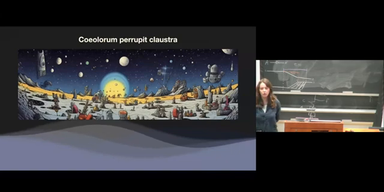
Slide from 2 seconds before the transition at: 03:22

Slide from 2 seconds before the transition at: 04:56
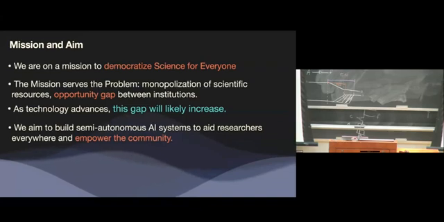
Slide from 2 seconds before the transition at: 06:19
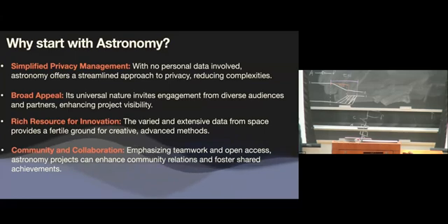
Slide from 2 seconds before the transition at: 06:37
Slide from 2 seconds before the transition at: 07:37
Slide from 2 seconds before the transition at: 08:43
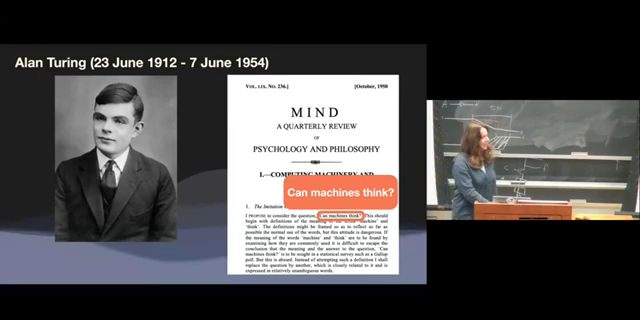
Slide from 2 seconds before the transition at: 09:38
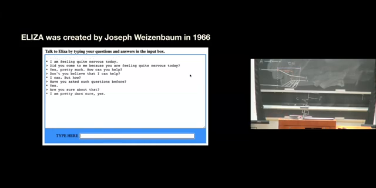
Slide from 2 seconds before the transition at: 10:32
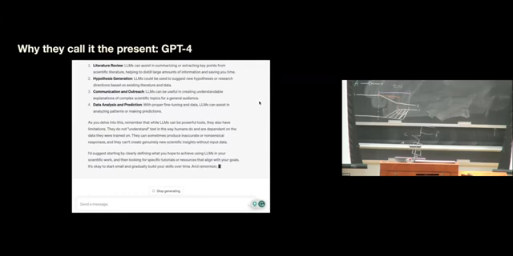
Slide from 2 seconds before the transition at: 10:39
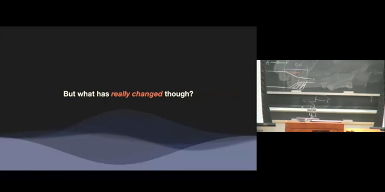
Slide from 2 seconds before the transition at: 11:37
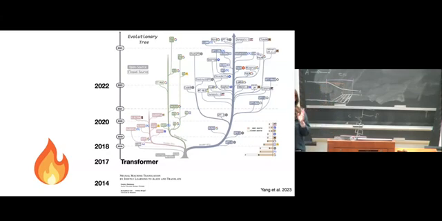
Slide from 2 seconds before the transition at: 12:19
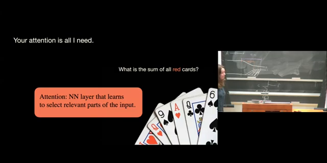
Slide from 2 seconds before the transition at: 13:30
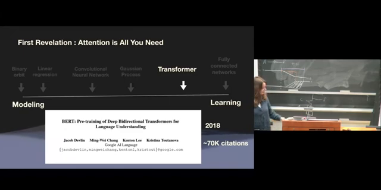
Slide from 2 seconds before the transition at: 14:24
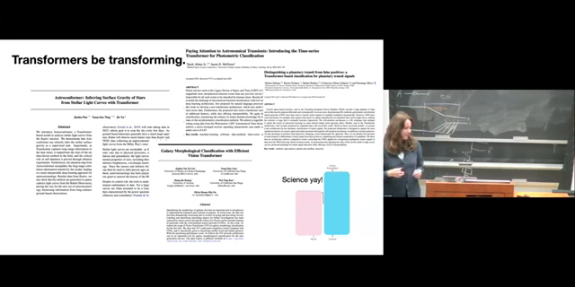
Slide from 2 seconds before the transition at: 15:02
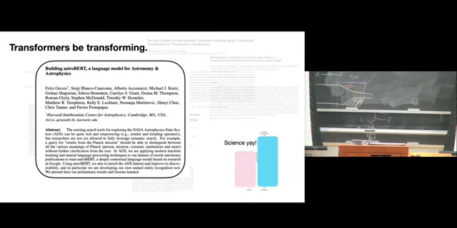
Slide from 2 seconds before the transition at: 15:50
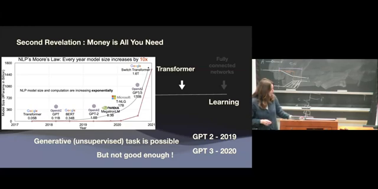
Slide from 2 seconds before the transition at: 16:39
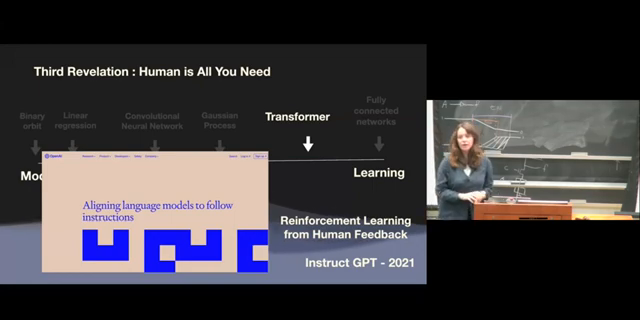
Slide from 2 seconds before the transition at: 17:29
Slide from 2 seconds before the transition at: 17:46

Slide from 2 seconds before the transition at: 18:14
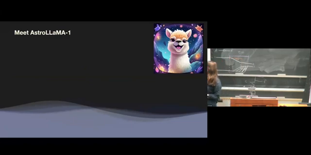
Slide from 2 seconds before the transition at: 18:34
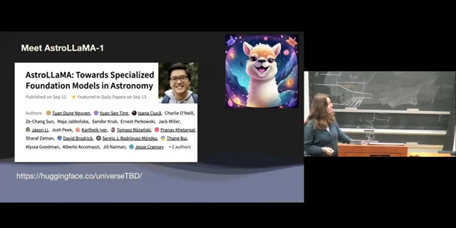
Slide from 2 seconds before the transition at: 18:52
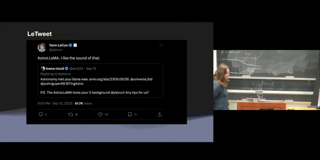
Slide from 2 seconds before the transition at: 20:18
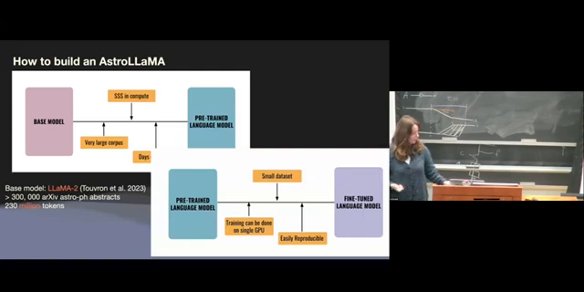
Slide from 2 seconds before the transition at: 28:30
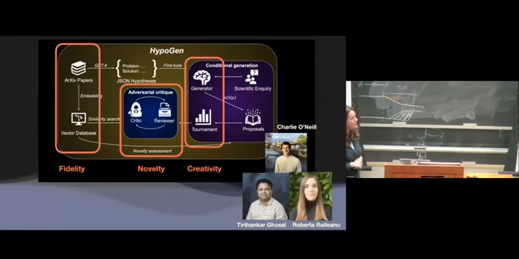
Slide from 2 seconds before the transition at: 28:56
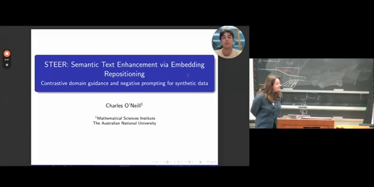
Slide from 2 seconds before the transition at: 28:57
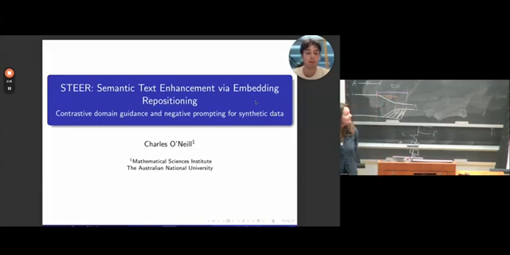
Slide from 2 seconds before the transition at: 29:42
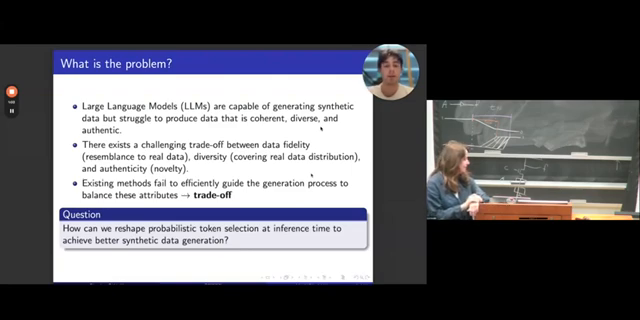
Slide from 2 seconds before the transition at: 30:32
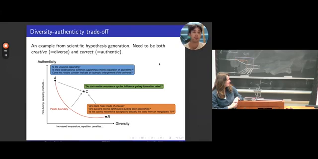
Slide from 2 seconds before the transition at: 31:16
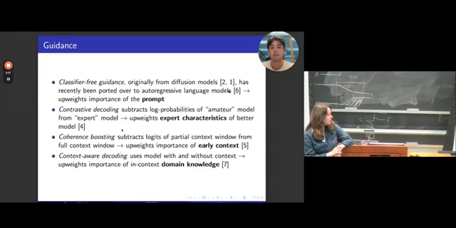
Slide from 2 seconds before the transition at: 31:31
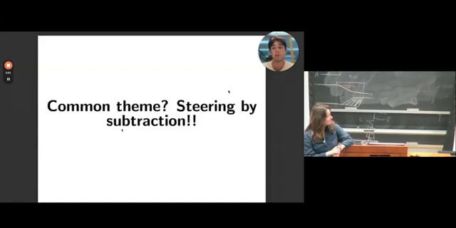
Slide from 2 seconds before the transition at: 32:55
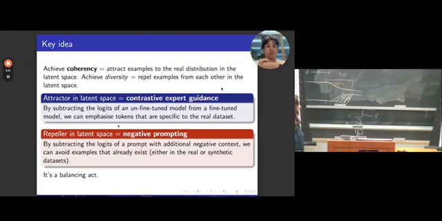
Slide from 2 seconds before the transition at: 33:09
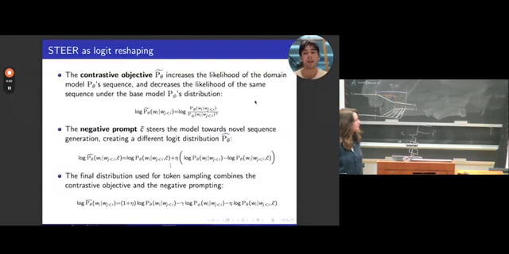
Slide from 2 seconds before the transition at: 33:23
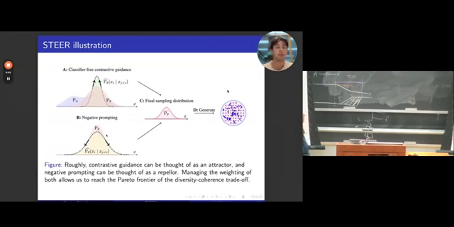
Slide from 2 seconds before the transition at: 33:24
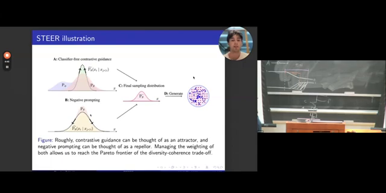
Slide from 2 seconds before the transition at: 34:07
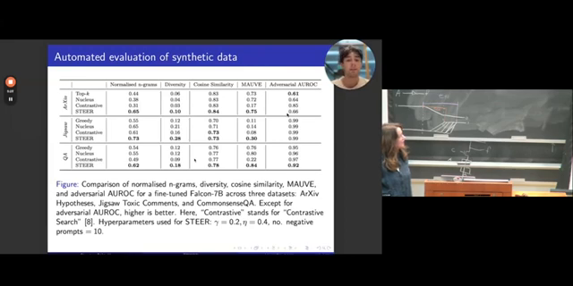
Slide from 2 seconds before the transition at: 34:23
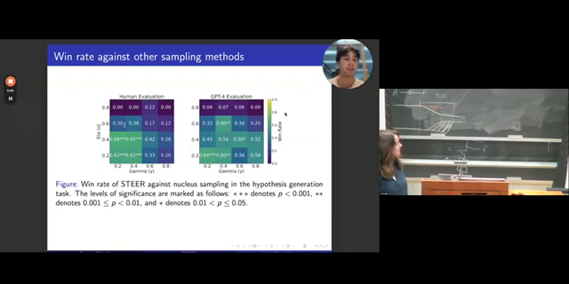
Slide from 2 seconds before the transition at: 34:39
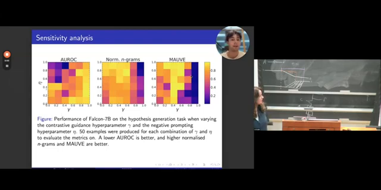
Slide from 2 seconds before the transition at: 34:48
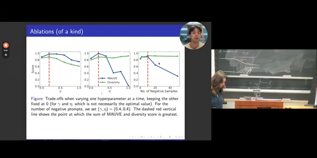
Slide from 2 seconds before the transition at: 35:30
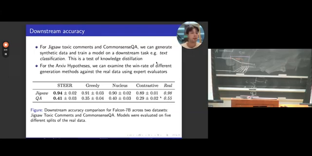
Slide from 2 seconds before the transition at: 35:48
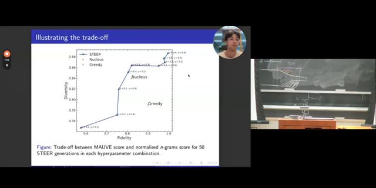
Slide from 2 seconds before the transition at: 36:31
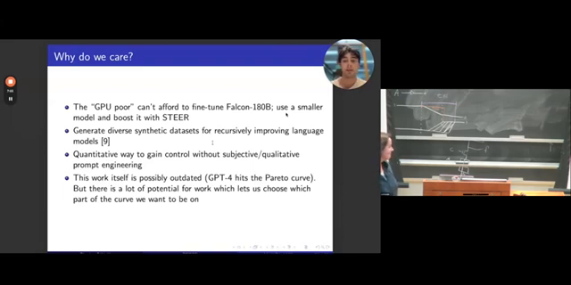
Slide from 2 seconds before the transition at: 37:03
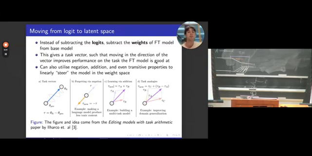
Slide from 2 seconds before the transition at: 40:10
Slide from 2 seconds before the transition at: 41:04
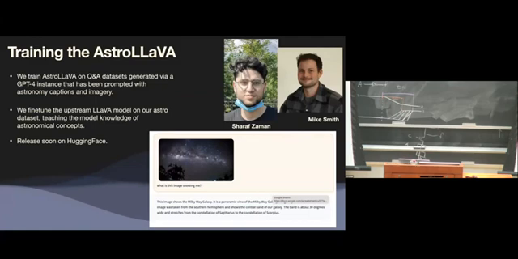
Slide from 2 seconds before the transition at: 41:04